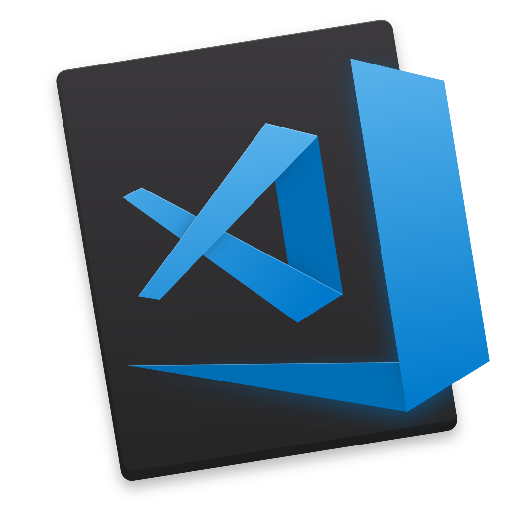
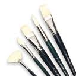

 Visual Studio Code + GitHub |
|
| Головна Фотогалерея Телефони Статистика Зареєстровані | |
News
Registrationshim for font face
HTML5 Pacman |
Зробити сайт з нами легко Створення власного сайту - це не тільки прерогатива великого бізнесу. Інтернет відкриває широкі можливості в першу чергу для малого бізнесу, для приватної підприємницької ініціативи. Адже, при започаткуванні власної справи розробка сайту потребує зовсім невеликих інвестицій, у порівнянні з іншими видами витрат. Створити сайт, в більшості випадків - це значно дешевше, наприклад, ніж оренда офісу, чи витрати на зарплату працівників. Якщо Вам потрібно якісно створити сайт, який максимально буде відповідати своєму призначенню, то Ви завітали за вірною адресою! > GitHub . українською
Наша вебстудія допоможе, якщо Вам потрібно:
Ми будемо раді стати Вам у нагоді і створити веб-сайт, якісний і привабливий для відвідувача. Вебстудія Web-DECO надає цілий комплекс послуг з проектування сайтів, дизайну сайтів і розробки сайтів. Створити сайт у Києві? Створити сайт в іншому місті? Так, цілком можливо. Територіально наша вебстудія знаходиться в Київській області, тому найчастіше ми займаємось розробкою сайтів для замовників із Києва. Але кількість користувачів Інтернет постійно росте і в інших містах - у Дніпропетровську, Львові, Харкові, Донецьку, Запоріжжі, Кіровограді, Черкасах, та в більшості інших куточків України. Відповідно, зростає і попит на веб-сайти. Тому ми будемо раді створити сайт і для клієнтів з будь-яких інших міст. В такому разі вебстудія виконує всі роботи зі створення сайту віддалено. Створення сайту є однією з наших пропозицій у галузі веб-розробки. Коротко про всі пропозиції: Дизайн сайту від веб-студії Web-DECO  При створенні сайту його зовнішній вигляд, з нашої точки зору, має бути гармонійним і збалансованим. Дизайн сайту повинен мати певну оригінальність, щоб він легко запам'ятовувався. З другого боку, на сайті мають бути присутні зручність візуального сприйняття і інтуітивна зрозумілість інтерфейсів. Саме тому ми пропонуємо виключно індивідуальний підхід до створення дизайну сайту. При проектуванні кольорових рішень, візуальних елементів сайту ми обов'язково врахуємо специфіку діяльності клієнта і його особисті побажання. Розробка сайту в нашій веб-студії (картинка html.jpg)Основа для ефективного виконання сайтом покладених на нього задач, як правило, закладається ще в період розробки сайту. Ми ретельно ставимось до питань швидкодії і економії ресурсів при роботі сайту. В той же час, важливе значення мають його надійність, зручність керування сайтом, можливість оновлення і нарощення функціональності сайту. Тому ми розробили власну систему керування контентом сайту (CMS), яка дозволяє зробити процес управління створеним сайтом максимально зручним і приємним. При розробці cайтів фахівці вебстудії Web-DECO використовують найбільш прогресивні технології веб-розробки. Підтримка сайту, пошукове просування сайту, пошукова оптимізація сайту від веб-студії Web-DECO (картинка graphic.jpg)Важливим напрямком діяльності нашої вебстудії є також технічна і інформаційна підтримка сайтів. Адже мало просто зробити сайт. Щоб зацікавити відвідувача, створений сайт має підтримувати свій контент у свіжому і актуальному стані, а також в разі потреби оновлювати свої сервіси і функціональний зміст. Крім того, не слід забувати і про пошукову оптимізацію сайту (SEO), завдяки якій сайт отримує гарне взаєморозуміння із провідними пошуковими системами. Відвідувачі, які прийшли на сайт з пошукових машин, є для сайту найціннішими. Вони вже сформулювали свої інтереси і намагаються знайти інформацію на потрібну для них тему. Саме тому дуже важливо направити на сайт відвідувачів з пошукових систем, які задають цільові фрази, що стосуються Вашого бізнесу. Тож задача пошукової оптимізації - просування сайту в верхні рядки результатів пошукових систем за ключовими словами, які шукає користувач. Це дає гарну можливість привернути увагу до сайту з боку великої кількості зацікавлених відвідувачів. Звертайтесь до веб-студії Web-DECO, і ми з радістю застосуємо свої здібності і досвід для вирішення Ваших задач! Ми можемо створити сайт, який стане для Вас вдалою інвестицією. Ну і звісно трішки хорошого жарту в такий складний для країни час |
Як підключити Visual Studio Code + GitHub >>Доброго вечора ми з України |